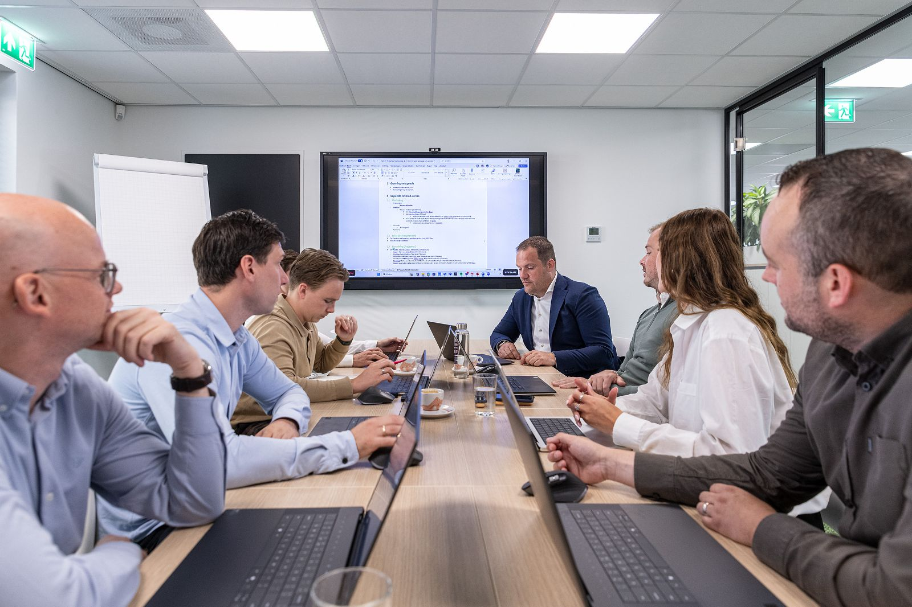

Jij trekt de digitalisering in je organisatie. Met wie spar jij?
De BIM4ALL Kring is een besloten groep BIM-managers, BIM-coördinatoren, digital leads en innovatiemanagers uit bouw, installatie en vastgoed. Vier keer per jaar aan tafel met vakgenoten en onze specialisten, en tussendoor een kennislaag die je bijhoudt. Geen ledenlijst van honderden namen, maar een groep die elkaar kent.

Vier goede momenten per jaar. En alles ertussen.
Geen lange lijst voordelen. Drie dingen die we goed doen: intervisie met vakgenoten, een kennislaag die bijblijft en specialisten die je direct kunt bevragen.
Geen presentaties. Wel jouw vraagstuk op tafel.
Je brengt je eigen vraagstukken en ervaringen open op tafel, en vier keer per jaar je aanwezigheid. Je haalt het antwoord van iemand die hetzelfde al meemaakte, en specialisten die je direct kunt bevragen.
Wat in de Kring besproken wordt, blijft in de Kring. Dat is de afspraak die het gesprek open houdt.
Voor wie digitalisering trekt, niet alleen uitvoert.
Je hebt invloed op hoe je organisatie digitaliseert en verandert. En je merkt dat je die vragen intern met weinig mensen kunt delen.
Zoek je een samenwerking voor je hele organisatie, met directie en HR aan tafel? Dat is Digital Fit, een andere dienst. De Kring is jouw persoonlijke lidmaatschap.
Kwaliteit van de groep gaat boven het aantal leden.
Je komt erbij op voordracht van een lid of op onze uitnodiging, na een kennismakingsgesprek. Zo blijft de groep klein genoeg om elkaar echt te kennen en groot genoeg om van te leren.
Het lidmaatschap is persoonlijk: jij bent lid, ook als je van werkgever wisselt.
Past de Kring bij jou?
Bel Melvin. In een kwartier weet je of de groep bij je past en of er plek is. Geen verkoopgesprek: we willen vooral weten waar jij mee zit.
We reageren dezelfde werkdag. Liever eerst zelf kijken? Doe de zelfscan.